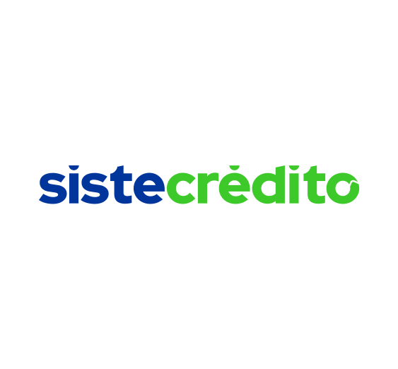
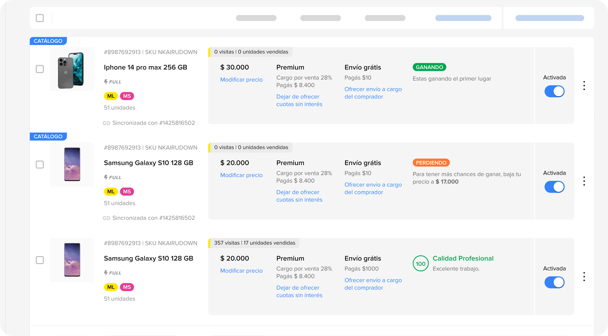

iQor
BPO
UX Design
I design user-centered digital products: accessible, functional, and built to scale. I've spent 6 years working with fintech, ecommerce, BPO, and B2B companies to transform complex ideas into clear, precise interfaces that deliver results.


Senior designer specialized in leading Design Systems, component governance, internal workflows, design standards, and documentation. Expert in Figma and AI-powered workflows that take products from prototype to production faster without sacrificing quality.
Comprehensive design languages that scale across entire product lines. Token-based architectures, component libraries, and cross-platform consistency frameworks built to evolve without breaking established patterns.
High-performance React and Next.js applications engineered around code splitting, performance budgets, and long-term maintainability. Structure that survives team growth and shifting requirements.
Micro-interactions and motion systems that communicate state, hierarchy, and feedback without visual noise. Every animation earns its place by conveying structural meaning, not decoration.